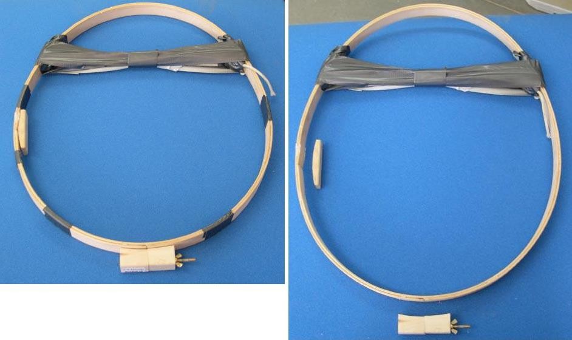

| Wood / Freestanding Coaming (3 of 8) | Menu Previous Page Next Page |
|
 A cord or small rope is tightened around the coaming to create the desired shape. Tape can also be used to hold the rope in place. The rope stays in place for a couple of days to insure the new shape is retained. In this case, it's 19" X 16". Tape can also be wrapped around the hoops in several locations to hold the hoops in proper alignment while curing. Any excess resin that squeezes out between the hoops should be wiped off. After curing, remove the rope, tape, and the additional wood pieces from the hoops. They are stapled in place, and are easy to remove. |
|